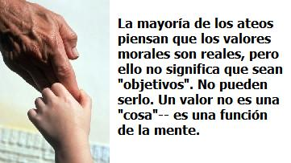
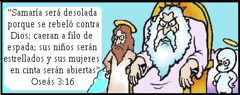
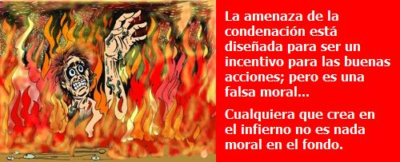

Si hacemos una buena acción simplemente por amor a Dios y el convencimiento de que ello Le complace, ¿de donde proviene la moralidad del Ateo?…Su virtud, pues, debe haber tenido otro fundamento que el amor de Dios.
—Thomas Jefferson
Por amor a la bondad
Usted advierte que una persona está ahogándose en un río. ¿Que haría? Si está de acuerdo con Jefferson, debería considerarse a sí mismo un “animal social” con un instinto hacia la compasión, ya sea que crea Ud. en un dios o no. Si es Ud. un Humanista, se identificará con el sufrimiento de otro ser humano. Si es Ud. un Cristiano, creerá que la vida de una persona tiene valor porque el o ella fue “creada a imagen y semejanza de Dios.”
Pero cualquiera que sea su fundamento de valor, todavía tiene que decidir: “¿Debo lanzarme al agua?” No puede sacar una lista de su bolsillo de atrás para mirar la “Regla 127: Que hacer cuando alguien está ahogándose.”
Los dilemas de comportamiento implican un conflicto de valores, y en la vida real esto significa que son siempre de situación. No puede simplemente seguir a ciegas un código: debe comparar los méritos relativos de las consecuencias de varias acciones; y la única manera de hacer esto es ejercitar la razón.
¿A que distancia está la persona en el río? ¿Qué fuerza tiene la corriente? ¿Es Ud. un buen nadador? ¿Es probable que cause Ud. dos muertes en lugar de una? ¿ Del cuidado de cuantos hijos es Ud. responsable?
Sería inútil plantearse, “¿Es moral zambullirse?” El único objeto de esta irrelevante pregunta podría ser hacerle sentir virtuoso, o culpable.
Quizá tome valientemente el riesgo y se zambulla. O, lamentablemente, puede razonar que la más moral de las acciones en este caso sería no lanzarse al río, y correr a buscar ayuda, si es posible. Su fundamento de valor no es importante: los hechos de la situación si lo son.
Citando a Dostoyevsky —”Si Dios no existe, todo es permisible”— muchos creyentes sugieren que solo son los teístas quienes pueden tener valores, aun cuando, como Jefferson, saben con certeza que ello no es cierto. Nosotros los ateos estamos justamente tan dispuestos a saltar al río como los cristianos—quizá aún más dispuestos.
“¿Cómo explica un ateo la existencia de valores morales objetivos?”, escucho a menudo. “Si no cree en Dios, ¿cuál es entonces su fundamento de moralidad?”
Nosotros los ateos encontramos los fundamentos de nuestra moralidad, desde luego, en la Naturaleza. ¿Dónde si no miraríamos?
La mayoría de los ateos piensan que los valores morales son reales, pero ello no significa que sean “objetivos”. No pueden serlo. Un valor no es una “cosa”— es una función de la mente (la cual es ella misma una función.) Ser objetivo es existir independientemente de la mente. Por lo tanto, un “valor objetivo” es un oxímoron: la existencia en la mente de algo que es independiente de la mente.
Aun cuando la mayoría de los ateos aceptan la importancia de la moralidad, esto no es aceptar que la “Moralidad” existe en el Universo, un objeto cósmico esperando ser descubierto. La palabra “moralidad” es solo la etiqueta de un concepto, y los conceptos sólo existen en la mente. Si no existiesen las mentes, no existiría la moralidad.
Moralidad es simplemente la evitación del daño innecesario. Ya que el daño es natural, su evitación es un ejercicio material. Los organismos sufren cuando chocan con su entorno, y como animales racionales, nosotros los humanos tenemos alguna opción sobre como ocurre esto. Si minimizamos el dolor y mejoramos la calidad de vida, somos morales. Si no lo hacemos, somos inmorales o amorales, dependiendo de nuestras intenciones.

Para ser moral, los ateos tienen acceso a las simples herramientas de la razón y la bondad. No hay un Código Cósmico dirigiendo nuestras acciones.
Desde luego, en relación con la humanidad, ciertas acciones generales pueden ser consideradas casi uniformemente correctas o erróneas. Sin los Diez Mandamientos, ¿hubiera caído en la cuenta la raza humana de que hay un problema con matar? Las prohibiciones contra el homicidio y el robo existían milenios antes de que los Israelitas reclamaran el copyright.
La manera de ser moral es aprender que es lo que causa daño y como evitarlo. Esto significa investigar la naturaleza—especialmente la naturaleza humana: quienes somos, que necesitamos, donde vivimos, como funcionamos, y porque nos comportamos de la manera que lo hacemos.
¿Porque debería tratar a mi vecino con delicadeza? Porque todos nosotros estamos conectados. Somos parte de las mismas especies, genéticamente relacionadas. Desde que me valoro a mí mismo y a mi especie, y a las otras especies con las que estamos relacionados, reconozco que cuando alguien hace daño, mi familia natural sufre. Por naturaleza, aquellos de nosotros que somos mentalmente sanos nos rebelamos ante el dolor y deseamos que cese.
Esto no es la Regla de Oro. Confucio, 500 años antes de la Cristiandad, expresó mejor el principio cuando dijo, “No hagas a los demás lo que no quieras que ellos te hagan a ti.” Aunque no es un principio completamente adecuado desde un punto de vista ético, es mucho mejor que “Haz a los otros” porque identifica que la evitación del daño es la clave de la moralidad.
Desde luego, a menudo actuamos de manera positiva para detener el dolor de otros. Esto es compasión. Los ateos podemos quizá expresar más fácilmente la compasión que los creyentes porque no estamos confusos por el fatalismo (” Pase lo que pase es la voluntad de Dios”), el pesimismo (“Merecemos sufrir”), la salvación (“La muerte no es el final”), la recompensa (” La Justicia prevalecerá en la vida eterna”), la magia (“Ora para pedir ayuda”), la guerra santa (“Mata en el nombre de Dios”), el perdón (” No seré tomado como responsable de mis errores”), o la gloria (“Sufrir por Cristo es un honor”.) Desde el momento que esta es la única vida de la que disponemos los ateos, cada decisión es crucial y somos responsables de nuestras acciones justo en el momento.
Sin embargo fíjense como se las entienden con el mundo real los principales teístas: “Tened siempre presentes a los pobres,” dijo el “amoroso” Jesús, quién nunca levantó un dedo para erradicar la pobreza, derrochando preciosos ungüentos para su propio lujo en lugar de venderlos para alimentar a los hambrientos (Mateo 26:6-11.) “Creo que es muy hermoso que los pobres acepten su destino, para compartirlo con la pasión de Cristo,” añadió la Madre Teresa. ” Pienso que el sufrimiento de la gente pobre es de mucha ayuda para el mundo” ¡Tal es la compasión teísta!
Jefferson puede haber estado equivocado al llamar “un instinto” a la compasión porque muchos parecen no poseerlo, parece opcional. Pero por suerte hay bastantes de nosotros que amamos la vida lo suficiente para protegernos de los que no lo hacen. Tenemos sistemas de leyes, vigilancia, justicia y defensa. Fomentamos acciones bondadosas y éticas a través de la educación moral y el pensamiento crítico.
Pero la mayor parte de los creyentes, incluyendo a los Cristianos a quienes se ordena “desechar todo pensamiento sobre la obediencia a Cristo,” tienen una subyacente desconfianza del razonamiento humano. Anhelando lo absoluto, perciben el relativismo el reconocimiento de que las acciones deben ser juzgadas en su contexto como algo peligroso, cuando es la única forma en que podemos ser verdaderamente morales.
Los teístas temen que la gente piense por sí misma; los ateos temen que no lo haga.
Cuando los teístas establecen una tesis sobre “derechos naturales”, a menudo señalan a Locke, Jefferson, Paine y otros ilustrados pensadores de la Edad de la Razón (La Ilustración.) Es ilustrativo observar que raramente citan la Biblia. En ninguna parte de las Escrituras encontrará un reconocimiento de que cada individuo tiene un “derecho inalienable” a ser tratado con imparcialidad y respeto, o que “Nosotros, el Pueblo” somos capaces de gobernarnos por nosotros mismos. No hay democracia en la “palabra de Dios.” En la Biblia, los humanos son “canallas” y “pecadores” que merecen condenación, “esclavos” que deberían someterse humildemente a todos los reyes, celestiales y terrenales.
Abogando por el “consentimiento de los gobernados” sobre la autoridad de un soberano, la Declaración de Independencia es descaradamente antibíblica. Nosotros los Americanos somos un pueblo orgullosamente rebelde que combatimos en una Guerra Revolucionaria para sacar fuera de nuestros asuntos al Rey y Señor; y para probarlo, hicimos una Constitución atea, la primera en separar iglesia y estado.
Pero muchos Cristianos Americanos lo ven diferente: ” Si Jefferson hubiera sido influenciado por Darwin en lugar de Locke,” escribió Clifford Goldstein, editor de Liberty Magazine, revista de los Adventistas Del Séptimo Día, “la opinión de José Stalin sobre libertad religiosa habría sido considerada progresista.” En un “Universo Darwinista,” sostiene Goldstein, la verdad descansa “en una fundación tan caprichosa como el electorado o cualquier déspota que casualmente ejerza el control.”
¿Eh? ¿Cómo le irá a la verdad en el “universo teísta” donde el déspota se llama Jehová?
El Dios de las Escrituras exterminó grupos enteros de gentes que ofendieron su vanidad, ordenando mantener con vida a jóvenes vírgenes como botín de guerra para sus sacerdotes (Números, 31.) “Feliz aquel que tome a tus pequeños y los estrelle contra las piedras,” advierte (Salmos, 137:9), amenazando a aquellos con la religión equivocada que “sus mujeres embarazadas serán destripadas” (Oseas, 13:16), enviando osos a atacar a 42 niños que tomaron el pelo a un profeta (II Reyes, 2:23-24), castigando inocentes descendientes hasta la cuarta generación (Éxodo, 20:5), discriminando a los impedidos (Levítico, 21:18-23), prometiendo que padres e hijos se devorarían los unos a los otros (Ezequiel, 5:10), y mucho más que encontraríamos repugnante en un ser humano. En este universo teísta, la moralidad es separada de la realidad y reducida a halagar al Soberano.
Si en Sábado, por ejemplo, ves a un hombre recogiendo leña para calentar a su familia, como Cristiano obligado a “recordar el Sabbath,” ¿qué harías? De a cuerdo con Números, 15:32-36, ¡deberías apedrearlo hasta matarlo! ¿No es esto caprichoso?
Jesús incorporó la esclavitud en sus parábolas como si ello fuera el orden más natural, sólo advirtiendo a los dueños de golpear a algunos esclavos menos severamente que a otros (Lucas, 12:46-47.) Tanto el culto de La Puerta del Cielo, como Origen, aceptan el consejo de Jesús: “Hay eunucos que se han hecho a sí mismos eunucos por el amor al Reino de los Cielos. El que sea capaz de entender, que entienda.” (Mateo, 19:12) ¿Es este un buen consejo?
Hay algunas buenas enseñanzas en la Biblia, desde luego; pero, ¿es bello un jardín invadido de malas hierbas? Jefferson pensaba que la mayor parte de las palabras de Jesús eran insultantes, a pesar de lo cual vio unas pocas buenas enseñanzas, “fácilmente distinguibles como diamantes en un muladar.” (A Adams, Oct. 1813)
Goldstein lo vuelve por pasiva. Si Jefferson hubiera sido influido por Jehová en vez de por Locke, las opiniones de Adolfo Hitler sobre libertad religiosa ¡hubieran sido consideradas progresistas! Hitler permitió que se retorciera el Darwinismo por motivos políticos, enmarcando la evolución de una manera “social” no pretendida por el mismo Darwin, pero no fue el Darwinismo lo que dio al teísta Hitler sus bases morales: “Estoy convencido de que actúo como el agente de nuestro Creador. Rechazando a los Judíos, estoy haciendo el trabajo del Señor.” (Mein Kampf) Hitler acreditó a Jesús como su inspiración. En una celebración de Navidad Nazi en 1926, se jactaba de que “Cristo el más grande de los primeros luchadores en la batalla contra el enemigo del mundo, los Judíos…El trabajo que Cristo comenzó pero que no pudo terminar, Yo—(Adolfo Hitler) lo terminaré.” El Hitler creacionista compartía la sed de sangre con el pomposo Dios bíblico a cuya “imagen y semejanza” pensaba que fue creado.
No hay valor práctico en reclamar que los “derechos naturales” tienen sus raíces fuera de la naturaleza. Quien encuentra “valores morales absolutos” en la revelación de una deidad no ha aceptado nunca lo que estos son. Tome cualquier crucial asunto social actual—pena capital, aborto, suicidio clínicamente asistido, derechos de la mujer, divorcio, derechos de los homosexuales, castigos físicos, derechos de los animales, esclavitud, pacifismo, protección medioambiental, control de natalidad, superpoblación, separación iglesia/estado,—y advertirá que orantes, creyentes en la Biblia Cristianos se sitúan en lados opuestos. El apóstol Pablo alegaba que la deidad bíblica “no es el autor de la confusión,” aun cuando nunca ningún libro causó más confusión o división que la Biblia.
Si la Biblia nos da orientación moral absoluta, ¿dónde está esta? ¿Porque no se ponen de acuerdo los creyentes sinceros en estas importantes cuestiones? Está claro que la Biblia es una inadecuada guía de comportamiento, y que el tiránico dios de la mitología de las Escrituras nos conduce a la falta de valores.
Cuando Jefferson escribió sobre el “Creador” en la Declaración de Independencia, no hablaba sobre el dios Cristiano. Como Deísta, veía al “Creador” como a un ser mucho menos personal que la deidad bíblica. El dios del Deísmo era más “Naturaleza” que “Jehová.”
Cuando Jefferson afirma que todo el mundo está “dotado por su Creador con ciertos derechos inalienables,” pudo no querer decir “dotado” en el sentido de un soberano otorgando un privilegio que puede ser denegado. Si algo puede ser “otorgado “, también puede ser retirado. Si un derecho es inalienable, no puede ser quitado o retenido, ni siquiera por principios. Un derecho inalienable,” si es un derecho otorgado, es un oxímoron.
Los derechos humanos, si son inalienables, pueden no haber sido otorgados—ni por un gobierno, ni sociedad, ni dios Un “derecho natural” es la afirmación de una libertad, privilegio, o poder que poseemos inherente, por naturaleza (aun cuando todavía tengamos que convencer a otros a reconocer y garantizar este derecho.) Los Derechos Naturales, si existen, son desde luego inalienables; luego entonces no pudieron haber sido “otorgados”. Simplemente los poseemos.
Está claro que Jefferson quiere decir, figuradamente, que desde que hemos sido “dotados por la naturaleza” con necesidades humanas comunes, estamos justificados para esperar de la sociedad que haga honor a nuestro derecho a la vida, a la libertad, y a la búsqueda de la felicidad.
Los Cristianos piensan que deberíamos tratar a los demás con delicadeza porque todos fuimos creados a “imagen y semejanza de Dios.” Esto nos confiere valor, suponen.
Pero no explican porque. ¿Por qué la imagen de un dios da mayor valor que cualquier otra imagen? ¿Por qué da valor alguno? ¿Qué significa “imagen de Dios”?
“Dios es un Espíritu,” dijo supuestamente Jesús; ¿pero que es esto? La palabra “espíritu” no ha sido definida nunca, excepto en términos que nos dicen lo que no es: inmaterial, intangible, incorpóreo, sobrenatural. Nadie ha descrito lo que un espíritu es. “Hablar de existencias inmateriales,” escribió Jefferson, “es hablar de nada. Decir que el alma humana, los ángeles, Dios, son inmateriales, es decir que son nada, o que no hay Dios, ángeles o almas. No puedo razonar de otra manera.” (A John Adams, Agosto 1820. Esto no significa que Jefferson fuera un ateo: concebía a Dios como un ser material, o como la naturaleza misma, lo que es consistente con el Deísmo.)
Ya que “dios” nunca ha sido definido, mucho menos probado, su “imagen” no puede ser usada como base para nada. “Naturaleza,” por otra parte, significa algo. El Darwinismo nos muestra que los organismos vivos son el resultado de un proceso natural de evolución. Hemos sido moldeados por las leyes de la naturaleza.
Esta revelación puede solo dejar de impresionarle si le ha sido enseñado a Ud. que hay algo erróneo en la naturaleza, algo vergonzoso en ser un mero animal en un degradado reino por debajo de lo sobrenatural, sea esto lo que sea. Muchos teístas parecen ansiosos por jugar este juego de destruir la naturaleza. El “azar ciego” de la evolución, dicen, es una fuerza bruta incapaz de producir algo tan “noble” como nosotros los humanos.
Pero evolución no es azar ciego: es un diseño que incorpora aleatoriedad, no diseño inteligente, sino diseño según las leyes de la naturaleza, mediante el limitado número de formas en que los átomos interactúan matemáticamente y las moléculas combinan geométricamente. Es diseño por extinción, por la forma en la que un entorno cambiante anula automáticamente organismos incapaces de adaptarse, conservando a los más adaptados, si existen. La aleatoriedad de la variación genética es una fortaleza de la evolución, proveyendo de una mayor posibilidad de que algo sobreviva.
Esto es asombroso. En lugar de especular sobre un desconocido “creador”, podemos de hecho considerar nuestros orígenes. La evolución muestra como la complejidad surge de la simplicidad: el creacionismo no puede hacerlo. El creacionismo trata de explicar la complejidad con más complejidad, lo que solo sustituye un misterio con otro misterio. Si la complejidad funcional requiere un diseñador, entonces ¿cómo explica Ud. la complejidad funcional de la mente del diseñador?
El iluminador concepto Darwiniano es empírico, puede comprobarse, y apropiado para las criaturas que habitan un planeta físico. Nos muestra quienes somos en realidad. No estamos por encima de la naturaleza. No somos tan solo una parte de la naturaleza. Nosotros somos la naturaleza. Somos criaturas naturales en un entorno natural. A través del estremecedoramente desordenado, dolorosamente impredecible, en parte aleatorio, en parte determinado proceso de la selección natural, la vida, imperfecta aunque tenazmente persistente, ha llegado a ser lo que es.
Y esto es lo que hace a la vida valiosa: no tiene porque serlo. Es estimada. Es fugaz. Es vibrante y vulnerable. Es desoladora. Puede perderse.
Se perderá.
Pero existimos ahora. Somos preocupados, inteligentes animales, y podemos atesorar nuestras breves vidas. ¿Por qué es mejor eterno que temporal, o sobrenatural “más elevado” que natural? ¿No incrementa el valor la rareza? Dios es una idea, no una criatura natural. ¿Por qué debería ser más valiosa su “imagen” que nuestra propia “naturaleza”?¿Qué derecho tendría una existencia inmaterial —un espíritu en el cielo— a decirnos a nosotros, criaturas naturales que es lo valioso? ¿Ha sentido el alguna vez el dolor de dar la vida?¿Se esfuerza para pagar el alquiler?
Si fuimos creados a su desconocida imagen, entonces no tenemos idea de quien somos. Pero siendo moldeados a “imagen de la naturaleza,” sabemos quienes somos, y podemos saber más. Justo en nuestro patio trasero, aquí en la Tierra, podemos investigar, estudiar y continuar mejorando las condiciones en este planeta. No fue la fe lo que erradicó la viruela. Contemplar la “imagen de dios” no curará el cáncer o el SIDA.
La Ciencia nos ha dado mucho. ¿De que nos ha proveído la teología? La teología nos ha dado el infierno.
La amenaza de la condenación está diseñada para ser un incentivo para las buenas acciones; pero es una falsa moral. Los humanistas pensamos que debemos hacer el bien por amor a la bondad, no por la egoísta perspectiva de cosechar recompensas individuales o evitar el castigo. Cualquier ideología que convence amenazando con la violencia es una ruina moral. (Los hornos de Hitler, al menos, eran relativamente rápidos. El tormento que Jesús prometió es un “fuego que nunca será apagado.”) Cualquiera que crea en el infierno no es nada moral en el fondo.
Si la única forma en que Ud. puede ser obligado a ser bueno con los demás es con la amenaza del infierno, ello muestra qué poco se valora Ud. mismo. Si la única manera en que puede motivársele a que sea bondadoso con los demás es la promesa del cielo, ello muestra cuán poco valora Ud. a los demás.
La mayor parte de los ateos dirán, “¡Sé bueno, por amor a la bondad!”
Sobre al autor
De pastor a líder librepensador: Un caso de desconversión
Dan Barker nació en los Estados Unidos en 1949 y llegó a ser un evangelista protestante a los 15 años. Recibió un grado en Religión de la “Azusa Pacific University” y fue ordenado ministro protestante en 1975. Ejerció su ministerio en una iglesia cuaquera y una carismática y fue misionero en México por dos años. Después de leer por cinco años llegó a perder su fe en las creencias religiosas. El mismo afirmó que “de haberme limitado a los autores cristianos aún sería un cristiano”. Dan anunció su ateísmo en 1984.
Dan fue director de la Fundación para la Liberación de la Religión en el período 1987-2004 y elegido co-director junto con Annie Laurie Gaylor en 2004. El activismo de Dan lo justifica afirmando que “Fui predicador por muchos años, e imagino que eso no se me ha quitado del todo. Me gustaría influir sobre otros que pudieran estar luchando, como yo lo hice—influir sobre ellos para animarlos a pensar. A pensar deliberadamente y con claridad. A no tomar ningún hecho sin examen crítico, y a permanecer abiertos ante la investigación honesta, dondequiera que ésta los lleve.”
Dan es un prólifico escritor además de un excelente pianista. Dentro de sus obras cabe resaltar:
Losing Faith In Faith: From Preacher To Atheist (Perdiendo la fe en la fe: De Predicador a ateo). Es la historia autobiográfica de la desconversion de Dan y un análisis crítico del cristianismo y la Biblia. FFRF, Inc., 1992.
Maybe Yes, Maybe No: A Guide For Young Skeptics (Quizas si, Quizas no: Una guía para el joven escéptico). Es un libro que enseña el método científico a los niños. Prometheus Books, 1990.
Maybe Right, Maybe Wrong: A Guide For Young Thinkers (Quizas correcto, quizas errado: Una guía para jovenes pensadores). Este libro enseña moralidad humanista secular a los niños. Prometheus Books, 1992.
Volver a Simplemente ateísmo
Comentarios
Comments powered by Disqus